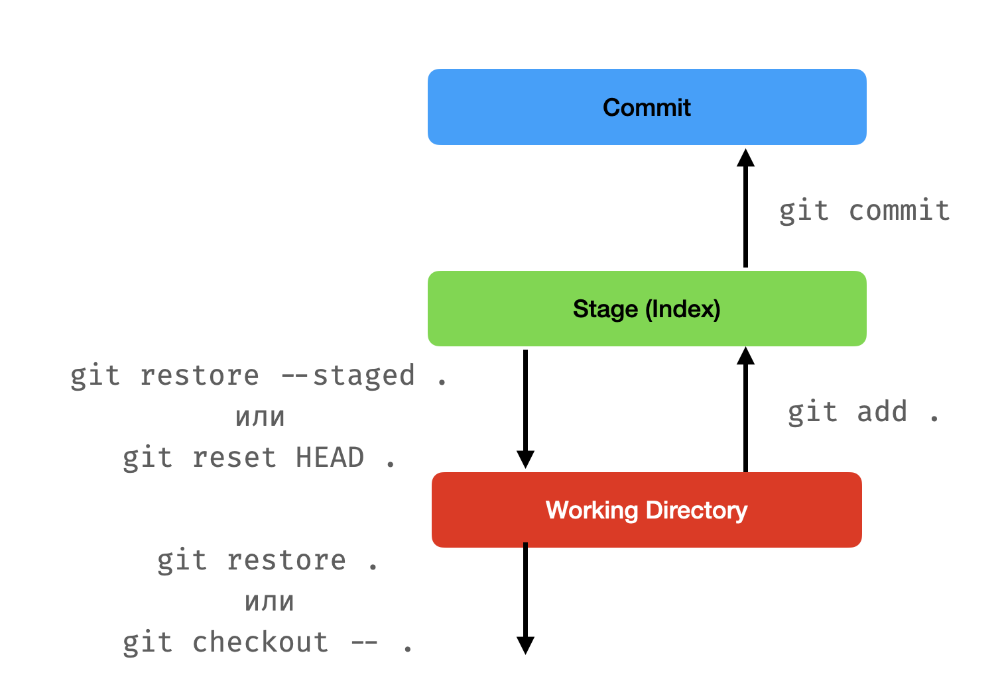

Работа с Git
Contents
Работа с Git#
Тази тема не е пряко свързана с Python, но е необходимо всеки от вас да е усвоил понятията от нея, понеже:
Всички домашни се предават чрез GitHub Classroom, което изисква да се работи с Git.
Version control системи на работа винаги се използват и много рядко са нещо различно от Git (освен ако нямате късмета на Любо).
Какво е Git?#
Децентрализирана система за контрол на версиите на сорс кода.
Накратко: това означава, че може да се възстановяват предишни версии на кода, като се пази и историята на промените на всеки файл от проекта. Git (и други системи за контрол на версиите) са причината хората да не си разменят zip файлчета с код насам-натам и да не получават инфаркт ако се направи фатална грешка, след която кодът на проекта трябва да се върне до предишно по-стабилно състояние. Git ни предоставя начин за колабориране с други колеги, чрез внасяне и сливане на промени по кода по прозрачен начин и обратим начин.
Как да изтегля Git?#
git е командата, която се използва за да управляваме repository-та чрез Git. Тя има много подкоманди, които се използват за различни цели. Сред най-използваните са git clone, git add, git commit, git push, git pull, git merge и други. Ще ги обясним подробно малко по-нататък.
Windows: препоръчва се инсталирането на Git Bash, което инсталира
gitи предоставя терминал, който позволява използването наbashкоманди и синтаксис и е доста по-удобен отcmd.exeпримерно.Linux: би трябвало да го има вече за повечето дистрибуции. Ако все пак го няма: копи-пейст на съответната команда оттука:
macOS: ако имате XCode command-line tools инсталирани (които идват с XCode), значи би трябвало да имате
git. Ако все пак нямате, ползвайте Homebrew да си го сложите:brew install git.
Как да управлявам папки с Git?#
За да бъде една папка, както и подпапките ѝ, поддържана от Git, трябва да съществува скритата папка .git в нея с необходимите за работата на Git файлове. Там се пазят т.нар. “refs” (references) към съдържанието на всички файлове и историята на техните промени.
Такава папка се нарича Git repository. За да създадем такава, трябва да изпълним командата git init в root-a на папката, която искаме да поддържаме с Git (т.е. тази, която да стане нашето repository, заедно с подпапките си).
Как се пази и следи историята?#
Промените в Git се разделят на т.нар. commit-и.
Всеки commit съдържа:
hash: уникален идентификатор (хешкод) на commit-a, който се генерира автоматично.
message: кратко описание на промените
parents: кой/кои са предшествениците на този commit. Всеки commit има обикновено точно един предшественик (освен първия, който няма такива). Един commit може да има няколко предшественика, ако е в следствие на merge операция например.
author: кой е направил промените
date: кога са направени промените
Историята на commit-ите на практика представлява нещо като дърво, в който всеки node е commit, имаш пойнтър към предишния такъв (понякога към повече от 1 предишни, в случай на merge). Тя е достъпна чрез git log.
Всеки commit се асоциира и със съответните промени, които той донася в кодбазата (т.е. във файловете в repository-то). Това се нарича diff. Различните видове промени биват добавяне и премахване на ред, добавяне, изтриване и преименуване на файл. Чрез git diff може да се направи сравнение между две версии на файлове.
Ако искаме да отидем до някой специфичен къмит, използваме git checkout <commit-hash>. Това ще промени съдържанието на файловете в директорията, така че да отговарят на състоянието на кода в този commit.
Обикновено, за да можем паралелно да работим с други хора, или пък да пазим различни състояние едновременно, искаме да използваме различни бранчове (branches). Един branch на практика представлява пойнтър към даден commit. Управлението им става чрез git branch, а преминаването от един в друг - чрез git checkout <branch-name>. Когато сме в даден бранч и създадем нов къмит, бранчът ще бъде променен да сочи към новия къмит (чийто предшественик е предходния) и по този начин създаваме и развиваме на практика нов свързан клон на дървото на промените.
Как да създам нови commit-и?#
Да речем, че имаме папка my-project, която е празна. Изпълняваме git init, за да я добавим към Git. Изпълняваме git status, за да проверим на кой бранч се намираме и какво е текущото състояние на промените и индекса:
On branch master
No commits yet
nothing to commit (create/copy files and use "git add" to track)
Това означава, че сме в бранч на име master - това е името по подразбиране за главен бранч. След бунтовете от 2020 във връзка с Джордж Флойд обаче все повече се налага и името main, така че може и това да срещнете (an interesting read on the histeria that was then: https://github.com/rubocop/rubocop/issues/8091 (hail Bacov)).
Да речем също, че искаме като за първи къмит да добавим файл main.py със следното съдържание:
print("Hello, world!")
Нека първия ни commit-a се казва “Initial commit”. Създаването му би станало с git commit -m "Initial commit". Ако се опитаме в момента обаче да го изпълним, ще получим грешка със съобщение, че нямаме никакви промени, които да къмитнем:
nothing added to commit but untracked files present (use "git add" to track)
Как така, нали добавихме файл?
Това е защото първо трябва да го добавим към индекса.
Т.нар. index/staging е междинно “място”, съдържащо промените ни, които искаме да включим в следващия къмит (т.е. които git commit ще вземе).
При изпълнение на git status в момента виждаме:
Untracked files:
(use "git add <file>..." to include in what will be committed)
main.py
“Untracked files” означава нови файлове, които досега не са били част от репозиторито.
За да добавим промени/файлове към индекса, трябва да изпълним git add <file>. В нашия случай - git add main.py. (Или git add . - това добавя абс. всичко към индекса).
След изпълнението му, git status вече показва:
Changes to be committed:
(use "git rm --cached <file>..." to unstage)
new file: main.py
Премахване на файлове/промени от индекса най-общо казано става с git restore --staged <file> или с git resed HEAD <file>. Това не променя файла, а просто го премахва от индекса - т.е. git commit просто няма да вземе тези промени, но те си остават в текущата директория.
Сега вече можем да си направим къмита с git commit -m "Initial commit".
След като сме направили къмита, git status вече показва:
On branch master
nothing to commit, working tree clean
С git log можем да видим новия къмит в дървото на историята:
commit 0a2ba7a9d3af36dd03a656955e2b246b9b1c8dc7 (HEAD -> master)
Author: Alexander Ignatov <aleksandar.ignatov@smule.com>
Date: Mon Oct 3 22:02:28 2022 +0300
Initial commit
След това за да добавим още къмити, ако трябва да обобщим, трябва да направим следните неща:
Добавяме промени към индекса с
git add <file1> <file2> ...Къмитваме промените с
git commit -m "Commit message"(илиgit commit- това ще отвори текстов редактор, в който ще трябва да напишете съобщението си. При невъзможност за излизане отvim, моля позвънете на 112).

Как да кача/сваля промените си към/от друго репозитори?#
Git е децентрализиран. Към всяко едно репозитори могат да се добавят един или повече т.нар. remotes. Това са други репозиторита, с които нашето може да синхронизира къмити и бранчове. Те се добавят с git remote add <remote_name> <remote_url>. Общоприето е да се използва origin за името на remote-а, ако е един и/или има централна роля.
За пример, ако имаме репозитори в GitHub създадено и искаме да го свържем с нашето, трябва да го добавим чрез HTTPS линка му с git remote add origin https://github.com/user/reponame. (SSH е предпочитан с цел по-добра сигурност). Това свързване става автоматично, ако нямаме локална копие на репото и използваме git clone за да го създадем, например в този случай git clone https://github.com/user/reponame,
За да свържем наш локален бранч към такъв, намиращ се в origin, трябва да изпълним git branch --set-upstream-to=origin/<branch_name> <branch_name>. Това ще създаде локален бранч с името на remote-а и името на бранча, към който сме свързали нашия. Това е нещо, което може да се направи и автоматично, като се отиде на съответния бранч с git checkout <branch_name>, ако <branch_name> е име на бранч, който още нямаме локално, но вече съществува на remote-a.
За да качим промените си, трябва да изпълним git push. Това ще качи всички промени, които имаме локално на текущия бранч, към remote-а, към който сме свързани, и на бранча, към който текущия е свързан. В случай, че не е свързан с никой, то тогава ще трябва да изпълним git push -u origin <branch_name>, където <branch_name> е името на бранча, намиращ се в origin, към който искаме да качим промените си (обикновено същото име като текущия локален).
Хубаво е периодично да се прави git fetch. Това обновява ref-овете с тези, намиращи се на remote-а. Това не променя локалните файлове, а само обновява информацията за къмити и бранчове, достъпни на remote-а.
За да обновим наш бранч до състоянието на remote-а, трябва да изпълним git pull (за по-сложни репозиторита се препоръчва и с параметър --rebase). Това ще извлече промените от remote-а и ще ги слеят с текущия бранч. Това е еквивалентно на последователното изпълнение на git fetch и git merge FETCH_HEAD.
Как да сливаме промени?#
Има два основни метода - merge и rebase. Тук ще говорим само за merge.
Когато сливаме два бранча, то това означава, че искаме да включим промените от единия бранч в другия. Ако искаме например да включим промените от бранч A в бранч B, то трябва:
Да се уверим, че локалното съдържание в бранч А е последното, в случай, че има шанс то да е променено на remote-a (
git checkout A && git pull).Да отидем на бранч B (
git checkout B)Да изпълним
git merge AДа оправим конфликтите, ако има такива
В конфликтите части от файловете ще се появят merge маркери, които изглеждат по подобен начин:
<<<<<<< HEAD Тук е конфликтното съдържание на файла в бранча, в който сме ======= Тук е конфликтното съдържание на файла в бранча, който сливаме >>>>>>> A
Трябва да оправим конфликтите, като изтрием всичко, което не искаме да остане и да оставим само това, което искаме да остане (Captain Obvious here)
След save-ване на файловете, трябва да ги добавим в индекса (
git add <file1> <file2> ...)Изпълняваме
git commitи обикновено не променяме съобщението по подразбиране (ако се отвориvimи отново не можете да излезете, подайте жалба тук)
Тази процедура ще създаде нов merge commit в B, който има 2 parent-a: последния къмит в А и последния такъв в B. Бранч А е успешно слят с B и вече може спокойно да бъде изтрит.
Pro tips for people living in the terminal#
За улеснение препоръчваме използването на теми и плъгини за терминала, които показват като част от prompt-a информация като това текущата директория дали е под git, в кой бранч се намира в момента и т.н. В Git Bash това е вградено, а за
zsh(илиbash) може да изтеглят framework-ове и плъгини, като например oh-my-zsh.diff-so-fancyе tool, който прави четенето на diff-ове в терминала една идея по-човешко (за който е hardcore и държи да си ползва терминала вместо някой GUI като SourceTree например или дори вградената Git функционалност на VSCode).Писането на команди като
git status,git checkoutи т.н. бързо се превръща в нещо, което ни се иска да не ни отнема толкова време да пишем. За да се спести време, може да се използват alias-и, които са съкращения на командите. Например, ако искаме да съкратимgit statusдоgs, можем да напишем във файла с настройките на терминала (.bashrcили.zshrc) следното:
alias gs='git status'
Идеи за alias-и, теми, плъгини и т.н. за
zshиoh-my-zshможе да почерпите от нечии dotfiles, като например моите.